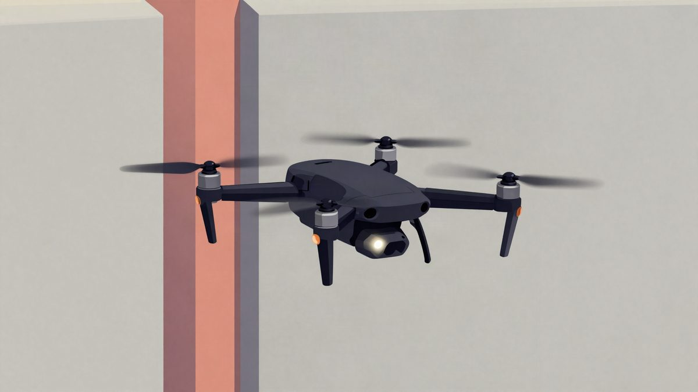

Dron širok 31 cm sklapa krakove i prolazi kroz procjep od 15 cm

Istraživači s norveškog NTNU-a, švicarskog ETH-a iz Züricha i Sveučilišta u Bonnu predstavili su dron kojem se krakovi sklope kad udari u rub otvora, a nakon prolaska se sami vrate u početni položaj. Širinu od 31,3 cm smanji na 14,1 cm pa prođe kroz procjep širok 15 cm. Cijena i komercijalna dostupnost još nisu poznate.
Istraživači s norveškog sveučilišta NTNU, švicarskog ETH-a iz Züricha i njemačkog Sveučilišta u Bonnu predstavili su dron koji može promijeniti oblik tijekom leta. Kad dotakne prepreku, krakovi mu se sklope, a nakon prolaska se sami ponovno otvore. Rezultate su objavili 6. studenog.
Za sklapanje nije potreban poseban motor. Krakovi se savijaju kad dron udari u rub otvora, a nakon prolaska se zbog elastičnosti vraćaju u početni položaj.
Rezultati testova
U eksperimentima je dron širok 31,3 cm smanjio širinu na 14,1 cm, što je manje od polovice početne vrijednosti, pa je prošao kroz procjep širok 15 cm. Prošao je i kroz uski prolaz dug 40 cm.
Istraživači su provjeravali i kut prilaza. U testovima je dron prilazio otvoru koso, pod kutom do 30 stupnjeva, i pritom je pokazao visoku stopu uspješnosti.
Moguća primjena
Cilj razvoja bio je omogućiti let u uskim i složenim prostorima. Istraživači procjenjuju da bi se tehnologija jednog dana mogla koristiti za pretraživanje područja pogođenih katastrofama i za pregled unutrašnjosti industrijskih postrojenja. U oba slučaja dronovi se često moraju provlačiti kroz otvore manje od njihova uobičajenog raspona.
Za sada je riječ o istraživačkom projektu, a snimke testova objavljene su na YouTube kanalu Autonomous Robots Lab.
Izvor: ETNews (전자신문)
Povezani članci
 Moždani implantat vratio govor pacijentima s ALS-om: razumljivost do 94 posto, jedna pacijentica ponovno pjeva15. studenoga 2026.
Moždani implantat vratio govor pacijentima s ALS-om: razumljivost do 94 posto, jedna pacijentica ponovno pjeva15. studenoga 2026. Humanoidni robot Howl uči skupljati jaja s poda peradarnika, NC State cilja na 2027.17. studenoga 2026.
Humanoidni robot Howl uči skupljati jaja s poda peradarnika, NC State cilja na 2027.17. studenoga 2026. Xiaomi tvrdi da Pengcheng N70 ostaje stabilan i kad na 160 km/h puknu dvije gume14. studenoga 2026.
Xiaomi tvrdi da Pengcheng N70 ostaje stabilan i kad na 160 km/h puknu dvije gume14. studenoga 2026.